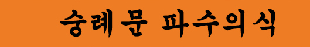

숭례문 파수의식은 조선시대 중요한 군례의식이었던 파수(도성 수비), 즉 도성문을 열고 닫는 개폐의식과 순라의식 등을 연결하는 의식을 재현하고 있는 행사입니다.
장소: 숭례문 광장
일시:
◈개폐의식 10:00, 15:35
(* 개폐의식은 3월 1일부터 시행예정)
◈파수의식 10:40, 11:20, 13:00, 13:40, 14:20, 15:00
◈순라의식 11:20, 13:40
※ 연중상설 / 단, 월요일 및 혹서기/혹한기, 눈과 비 오는 날은 행사가 쉽니다.
문의:
◈다산콜센터 02-120
◈참고사이트 www.visitseoul.net(visit seoul)

^
TOP